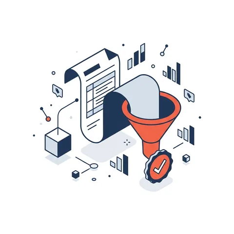
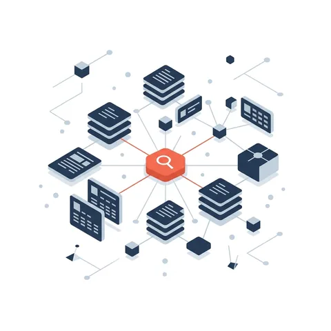
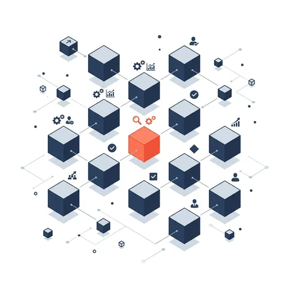
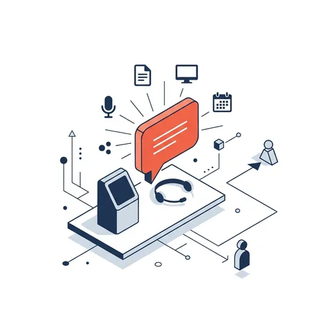

Deux produits, prêts à adapter.Two products, ready to adapt.
Estimé pour analyser vos appels d'offres, l'éditeur méthodologique pour exécuter vos façons de faire.Estimate to analyse your tenders, the methodology editor to run your ways of working.
EstiméEstimate
L'analyse de vos appels d'offres — plans, devis et documentation technique — pour préparer vos soumissions en quelques heures plutôt qu'en plusieurs jours.Analysis of your tenders — drawings, specifications and technical documents — to prepare your bids in a few hours instead of several days.
- Relevé : chaque tuyau mesuré, chaque appareil comptéTakeoff: every pipe measured, every fixture counted
- Devis : tout est cité, avec un lien vers la référenceSpecification: everything cited, linked to the reference
- Prix et soumission : un prix complet et des documents prêts à envoyerPricing and bid: a complete price and documents ready to send
Éditeur méthodologiqueMethodology editor
Le savoir-faire de votre organisation devient une méthodologie exécutable : chaque activité est confiée à un agent IA ou à un expert humain, avec l'approbation humaine aux points clés. Trois modes, et chacun voit celui auquel il a droit.Your organisation's know-how becomes an executable methodology: each activity goes to an AI agent or a human expert, with human approval at key points. Three modes, and everyone sees the one they are allowed.
Décrivez le besoin, joignez vos fichiers et lancez : la méthodologie fait le reste.Describe the need, attach your files and start: the methodology does the rest.
La conversation avec l'agent, les supports et le livrable, côte à côte.The agent conversation, the supports and the deliverable, side by side.
L'assistant de méthodologie, la bibliothèque de rôles et de supports, et le graphe des activités.The methodology assistant, the library of roles and supports, and the activity graph.
L'expert valide ou demande une révision, le livrable sous les yeux.The expert approves or asks for a revision, with the deliverable in view.
Des livrables dans le bon formatDeliverables in the right format
- Tableau de bord HTMLHTML dashboard
- Diagramme technique (ISA-5.1)Technical diagram (ISA-5.1)
- Objet 3D3D object
On part de vos dossiers, pas de la technologie.We start from your files, not from technology.

Appels d'offres et soumissionsTenders and bids
Du dossier d'appel d'offres à une soumission chiffrée et documentée.From the tender package to a priced, documented bid.
Estimé Estimate
Documentation techniqueTechnical documentation
Plans, devis, modèles 3D et diagrammes transformés en analyses, études d'opportunité ou nomenclatures.Drawings, specifications, 3D models and diagrams turned into analyses, opportunity studies or bills of materials.
Traçabilité et preuvesTraceability and evidence
Vos exigences structurées, les contrôles intégrés et la preuve à chaque étape.Your requirements structured, controls built in and evidence at every step.

Méthodes d'expertsExpert methods
Les façons de faire de vos experts, activées au bon moment, selon le rôle et le dossier.Your experts' ways of working, activated at the right moment, by role and file.
Saisie et rapports terrainField capture and reports
Notes, photos, voix et documents réunis en un rapport à votre gabarit.Notes, photos, voice and documents assembled into a report on your template.

Veille et synthèsesMonitoring and briefs
Les signaux de votre marché résumés en synthèses citées, prêtes à décider.Your market's signals summarised into cited briefs, ready for decisions.